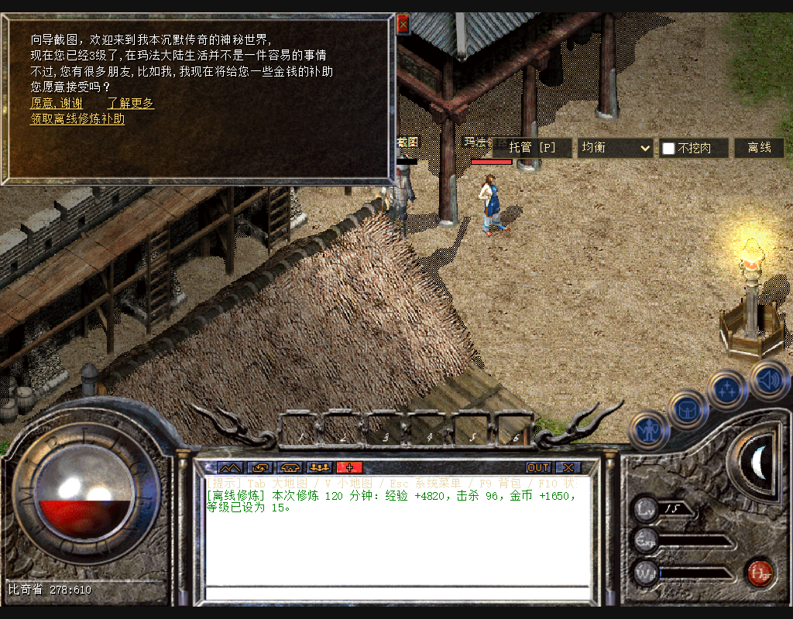
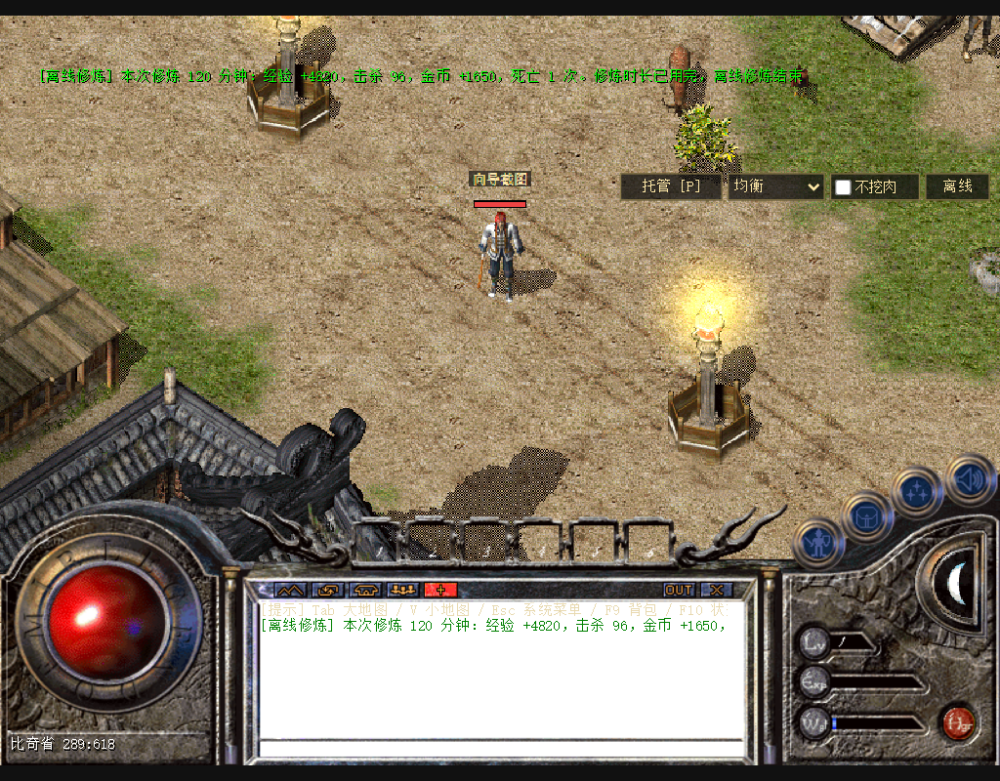
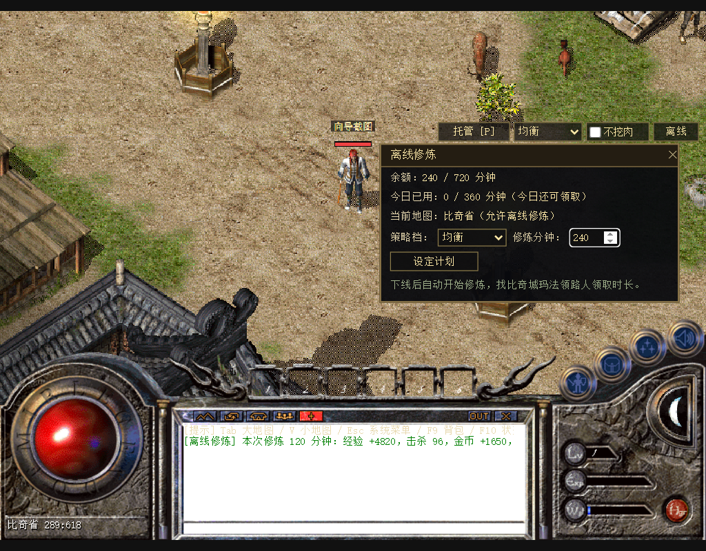
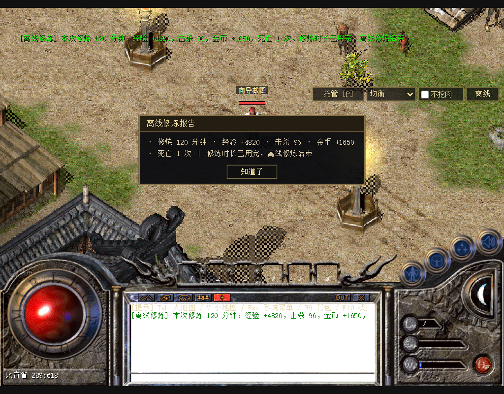

玛法领路人在比奇城内（坐标 280,610）。点击 NPC 对话，选择
「领取离线修炼补助」：

规则：新角色注册即赠送 4 小时体验时长；之后每日可领 1 次，每次 +4 小时， 余额上限 12 小时，领满后当天不能再领。
进入游戏后，屏幕右上角的托管条上有 托管 [P] 均衡 不挖肉 和 离线 四个控件，点击 离线 打开配置面板：


面板里可以看到：
计划设定好之后，正常退出游戏即可。角色会留在原地继续战斗，其他在线玩家 能看到 TA 在打怪；期间自动执行：选怪攻击 → 拾取 → 喝药 → 背包慢了回城卖货买药 → 回锚点继续。死亡会自动回城复活再回去（连续死亡 3 次会熔断停机，防止药尽送死）。
再次登录时，会弹出离线期间的结算报告：

| 项目 | 规则 |
|---|---|
| 开启等级 | 15 级以上 |
| 可挂地图 | 除比奇省(新手区)外的地图（后续可能调整） |
| 每日时长 | 每天最多修炼 6 小时 |
| 同时在线代理 | 每张地图 2 个、全服 10 个，满了排队 |
| 收益 | 经验 ×0.7（掉落与金币不打折） |
| 中途下线 | 没修炼完的分钟数自动退回余额，不白扣 |
| 服务器重启 | 自动续挂，并补偿 60 分钟时长，上线有通知 |
Q：点「设定计划」提示失败？
看面板里的红字原因：等级不足 15 级、在比奇省、余额不足 10 分钟、已死亡等，
对应解决后重试。
Q：想提前结束？
上线即自动接管结算，没用完的分钟退回余额；也可以在面板里点「取消计划」。
Q：和在线托管（P 键）有什么区别？
托管只在在线时生效；离线修炼是下线后继续，两者共用同一套战斗策略，可以同时用。